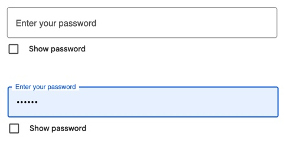

Visual thinking is the ability to analyze and interpret images through various viewpoints. Oftentimes, our eyes quickly scan visuals. Therefore it is important to provide images that spark curiosity. According to "10 Intriguing Photographs to Teach Close Reading and Visual Thinking Skills" by Michael Gonchar, media literacy teaches essential reading and visual thinking skills. Users can gain practice by sharing observations, asking open-ended questions, noticing small details, listening to other observations, and overall looking at the bigger picture.
Pertaining to web design, images and interactions with users can create novel user experiences. An incredible portfolio I came across uses imagery, videos, and animations spectacularly. Mat Voyce's portfolio has incredible user interactivity and diverse content. Each page, even within the same category, boasts countless dynamic animated elements. These include different forms of page navigation (scrolling vs. panning), various transitional and loading screens, and videos showcasing each of his works. His typographic and motion graphic specialities are evident from his homepage alone.
However, with fun interactive experiences comes some drawbacks. One example are performance issues. With so many animations playing at once, users with slower devices may face longer loading times or jagged animations, heavily affecting user flow. Furthermore, it may introduce navigation complexities. Those who seek straightforward navigation may be overwhelmed, lost, or confused on the site and may leave quickly. Balance between expression and usability is most important. Overall, Mat's portfolio inspires visual thinking through its unique design experience, encouraging users to engage with the type, rather than only reading it as text.
Modals & Overlays
Journal Two
Modals can be an extremely useful tool, but it is important to know when to use them. Oftentimes, modals are associated with advertisements or scammy deals upon opening the page. It also requires users to input an extra action to close. This can hinder user experience or disrupt the overall flow. Worse, this can be frustrating for users and prevent access to content or completing tasks. That is when users leave the site for good.
However, modals do have some good uses. One instance is of confirmation actions. Having a disruptive pop-up for users to confirm or cancel a destructive action draws attention toward their action. Another good use is of initial instructions or tutorials. Getting a couple modal slides of steps can be a good way to introduce actions to users.
Personally, I do not enjoy using or seeing modals on websites. As a user, I often find them disruptive, especially if there are multiple pop-ups on startup. User interfaces that keep all content on the same page felt the most inviting to me. For example, entering login information on the page, rather than a modal window has the most intuitive flow.
Forms
Forms are an essential aspect of interactive design for users to directly input information. They act as the bridge between users and designers. Therefore, it is important to follow the best practices like found in the article "Best practices for form design" by Salim Ansari, to create a smooth and simple user experience. From personal experience, I also recognize many of these practices encourage me to engage further.
For example, instances like checking out are often abandoned due to long or complicated sequences. Minimal input fields, especially dropdown menus or checkboxes, assist with the tedium. I also heavily rely on step completion bars, as I lose patience easily. Seeing how much I have left to complete makes me much more motivated to finish than unknowingly filling forms for ages. Most of all, I find direct feedback the most helpful. Highlights indicating which tab I am on or specific error messages streamline form processes the most.

Google log in password. (Notice how the inline label moves from inside the field to above. There is also a visible blue "selected" highlight and a "Show password" option).
One fantastic example is Google's sign up / log in process which features:
Minimal fields displayed reducing cognitive load
Specific error feedback
High contrast and active fields highlighted
Clear labels and placeholders
Pages broken into shorter sections
Responsive and accessible
Saved login information to streamline log in process